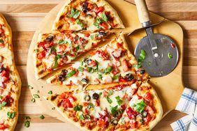

Description
No pizza oven? No problem! Make homemade pizza onthe grill to get that classic smoky flavor like from a wood-fired oven. And
even if you do have a pizza oven, you might sometimes
prefer pizza cooked on the grill.
Ingredients
-
1 cup warm water (45 degrees
Celsius / 110 degrees Fahrenheit)
-
1 packet (0.25 oz) active dry
yeast
-
1 pinch of white sugar
-
3 ⅓ cups wheat flour
-
1 tablespoon olive oil
-
2 teaspoons kosher salt
-
2 cloves garlic, minced
-
1 tablespoon chopped fresh basil
Garlic Oil
-
½ cup olive oil
-
1 teaspoon minced garlic
Pizza Toppings
-
¼ cup tomato sauce, divided into
two parts
-
1 cup chopped tomatoes,
divided into two parts
-
¼ cup sliced black olives,
divided into two parts
-
¼ cup roasted red pepper,
drained and chopped, divided into two parts
-
2 cups shredded mozzarella cheese,
divided into two parts
-
4 tablespoons chopped fresh basil,
divided into two parts
Steps
Step 1
Gather all ingredients.
Step 2
Making the dough: In a large bowl, pour in warm water; dissolve the yeast and sugar.
Let stand for 5–10 minutes until the yeast softens and becomes creamy.
Step 3
Stir in the flour, 1 tablespoon olive oil, and salt until the dough
starts pulling away from the sides of the bowl.
Step 4
Turn the dough out onto a lightly floured surface. Knead until smooth, about 8 minutes.
Step 5
Place the dough in a well-oiled bowl and cover with a damp cloth.
Step 6
Let the dough rise until doubled in size, about 1 hour.
Punch it down; add garlic and basil and knead again.
Let rise again for 1 hour or until doubled.
Step 7
Meanwhile, make the garlic oil: mix 1/2 cup olive oil with minced garlic
in a microwave-safe bowl. Heat in the microwave for 30 seconds.
Step 8
Preheat an outdoor grill to high heat; brush the grill grate with garlic oil.
Step 9
Preparing the pizza: Punch down the dough and divide it in half.
Shape each half into an oval about 3/8 to 1/2 inch thick.
Step 10
Carefully place one piece of dough on the hot grill grate.
When the bottom crust is lightly browned, flip the dough using two spatulas.
Step 11
Quickly brush the crust with garlic oil.
Step 12
Top with half of each of the following ingredients:
tomato sauce, chopped tomatoes, olives, red pepper, cheese, and basil.
Step 13
Close the lid and cook until the cheese melts.
Remove from the grill and let cool for a few minutes.
Repeat with the second piece of dough.
Step 14
Serve hot and enjoy!